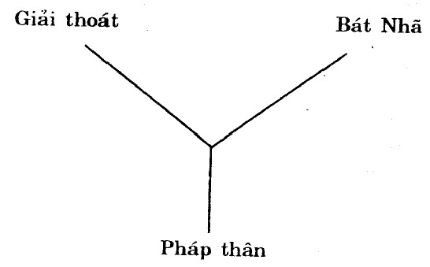

|
BuddhaSasana Home Page |
Vietnamese, with Unicode Times font |
Thuyết Bốn Ðế
Giáo sư Minh Chi
|
-[05]- PHỤ LỤC BÀI DIỆT ÐẾ NIẾT BÀN LUẬN Phân tích ngữ căn của từ Niết Bàn: (S. Nirvana) Có hai cách phân tích:
I. Nirvana: Nir + va + na (hình dung từ): Có các nghĩa thổi tắt, tiêu diệt, tịch diệt.
II. Nirvàna (Nir + Vana)
III. Nir - va: (động từ) thổi, tiêu diệt, tiêu mất.
Vana: hình dung từ.
Như vậy từ Nirvana có thể hiểu theo hai nghĩa tiêu cực và tích cực. Nếu là tiêu cực thì viết Nirvàna (nir + va + na). Nếu là tích cực thì viết Ni-rvana. Sự khác nhau là chỗ sau ngữ căn và của động từ, thêm danh từ Na, bèn dọc thành âm lưỡi, và danh từ thành ra có nghĩa tỉêu cực. Ngược lại, nếu sau và, có nà không đọc theo âm lưỡi thì ý nghĩa chuyển thành tích cực. Hơn nữa, nếu sau ngữ căn động từ, mà thêm na như là vĩ ngữ (terminal suffix) Na mà thành Vàna thì có thể dùng như hìnhdung từ. Trên đây là sự giải thích từ Nirvana của học giả Nhật Bản Tự Bổn căn cứ vào ý kiến của hai nhà Sanskrit học Williams và Childers. Nói chung lại, Niết bàn có hai nghĩa tiêu cực và tích cực. Nhưng các học giả phương Tây thường chỉ nhấn mạnh một chiều ý nghĩa tiêu cực của Niết bàn, laïi không hiểu nghĩa tiêu cực này của Niết bàn một cách đến nơi đến chốn. Trái lại, cái kinh và luận của Phật giáo đều chú trọng cả hai nghĩa tiêu cực và tích cực của Niết bàn. Như Luận Ðại Tỳ Bà Sa nói có 30 loại Niết Bàn (Ðại Tỳ Bà Sa luận cuốn 26, Ðại Chính cuốn 27 tr. 147). Trong số này, các loại Niết Bàn 1, 2, 3 là theo nghĩa tiêu cực. Từ 4 dến 13 là các loại Niết Bàn theo nghĩa tích cực. Theo loại thứ 7, Bàn là dệt, Niết là không, nghĩa là không dệt phiền não, không tạo ra phiền não. Trong loại Niết Bàn thứ sáu, Bàn là rừng, Niết là ra khỏi. Niết Bàn là thoát ra khỏi rừng (phiền não). Nói chung, các kinh Ðại thừa đều nhận thức và triển khai Niết Bàn chủ yếu theo ý nghĩa tích cực của nó. Như trong kinh Niết Bàn, quyển 33 có câu: "Này thiện nam tử, đoạn phiền não không phải là Niết Bàn, không sanh ra phiền não nữa mới gọi là Niết bàn." Chữ Tây Tạng, Niết Bàn là Mya-nam-boas. Có các nghĩa: "Vượt qua mọi nỗi khổ sanh tử", "giải thoát khỏi mọi phiền não và ác hạnh" , "giải thoát khỏi ba giới: Dục giới, Sắc giới và Vô sắc giới". Tiến sĩ Nhật Bản Xích Chiều Trí Thiên, trong cuốn "Nghiên cứu Phật giáo nguyên thủy, có làm một bản liệt kê những từ ngữ đồng nghĩa với Niết Bàn, nhưng âm khác, và xếp theo hai loại nghĩa tiêu cực và nghĩa tích cực. A. Từ ngữ có dạng phủ định, thiên về nghĩa tiêu cực:
Trên đây là các từ ngữ rút ra từ kinh diển Pàli. Sau đây là những từ không có nguyên văn đối chiếu, nhưng rút ra từ hai cuốn "Pháp uẩn túc luận" và "Tứ đế luận":
B. Từ ngữ nói lên nghĩa tích cực của Niết Bàn:
Ngoài các từ kể trên, các bộ Luận Du Già và A Tỳ Ðạt Ma Luận, có ghi thêm một số từ khác, cũng đồng nghĩa với Niết Bàn:
Niết Bàn đã là cảnh giới không thể lấy suy tư và ngôn ngữ thế tục để tư duy và bàn luận, có lẽ tốt nhứt là đừng có bàn luận. Nếu có yêu cầu thuyết pháp, yêu cầu giảng dạy mà bàn tới Niết bàn, thì cần luôn luôn tỉnh giác, nói hay viết là để giúp người nghe, người đọc hướng tới Niết Bàn bằng tu tập, hành động cụ thể, chứ không phảỉ để lôi kéo họ vào việc bàn cãi suông về Niết Bàn. Từ xưa đã có chủ trương không dịch nghĩa Niết Bàn mà chỉ dịch âm. Chủ trương đó là đúng đắn. Khi kinh Niết Bàn nói Niết Bàn có tên gọi vô lượng là muốn ám chỉ rằng không có tên gọi nào là thích đáng cả. Trong tập bài giảng về Bốn đế, ở mục diệt đế có dẫn chứng 66 tên gọi khác nhau của Niết Bàn, rút trong cuốn "Tứ đế luận", của Bà Ðậu Bạt Ma soạn (Vasuvarman), Chân Ðế đời Trần dịch (499- 569). Nhà Phật học Trung Quốc Trương Mạn Ðào trong cuốn "Niết Bàn tư tưởng nghiên cứu" có dẫn chứng một bảng liệt kê các danh từ đồng nghĩa với Niết Bàn, xếp theo hai bảng: một bảng liệt kê các từ theo nghĩa tiêu cực, phủ định và một bảng liệt kê các từ ngữ theo nghĩa tích cực khẳng định. Trích trong cuốn "Nghiên cứu Phật giáo Nguyên thủy" của nhà Phật học Nhật Bản Xích Chiểu. Niết bàn là một trong ba pháp ấn của đạo Phật: Niết bàn tịch tịnh. Niết Bàn là cảnh giới an lạc, giác ngộ và giải thoát của bậc Thánh trong đạo Phật. Còn gọi cảnh giới đó bằng ngôn từ gì, là do yêu cầu cụ thể của các bộ phái, các Luận chủ muốn triển khai mặt này hay mặt khác của cảnh giới đó mà thôi. Thế nhưng có dùng ngôn từ gì đi nữa, cũng chỉ là ngón tay chứ không phải là mặt trăng, là cái bè chứ không phải là cái bờ bên kia. Vì phải diệt hết phiền não mới chứng Niết Bàn cho nên gọi Niết Bàn là diệt hay trạch diệt. Nếu đã diệt hết phiền não, đạt tới cảnh tối thiện và thường trú của Niết bàn, nhưng vẫn còn thân thì gọi là Niết Bàn có dư y. Khi bậc Thánh ấy (A La Hán qua đời) không còn thân nữa thì gọi Vô dư y Niết Bàn. Chưa chứng Niết Bàn, làm sao biết được Niết Bàn là cảnh giới an lạc? Trong kinh "Milindapanha" (Hán dịch: Ði lan Ðà vấn đạo kinh), vua Milinda thắc mắc vì sao người chưa chứng Niết Bàn lại có thể biết cảnh giới Niết Bàn là an lạc.
Ðúng như vậy, tuy chúng ta chưa chứng Niết Bàn nhưng được nghe Phật và các bậc Thánh đã chứng Niết Bàn tán thán, ca ngợi Níết Bàn là an lạc hạnh phúc tuyệt đối vô thượng, cho nên chúng ta tin là, biết là cảnh giới Niết Bàn thực sự an lạc hạnh phúc. Chính vì lẽ đó mà tôi khuyên quý vị nên đọc hai tập Trưởng Lão Tăng kệ (Theragatha) và Trưởng Lão Ni kệ (Theri gatha), đọc bộ "Tập kinh" (Udana), Kinh Pháp Cú (Dhammapada), trong dó có ghi nhiều lời tán thán của các bậc Thánh đối với cảnh giới an lạc và hạnh phúc tuyệt đối của Niết Bàn. Việc giải thích Niết Bàn theo từ phủ định có thể là theo một lối suy nghĩ truyền thống của người Ấn Ðộ. Thay vì nói nhiều người, họ nói không phải một người, thay vì nói là xấu, họ nói không tốt. Do đó, Niết Bàn thường được giải thích theo từ phủ dịnh như là diệt khổ, dập tắt mọi đau khổ. Nhưng trong rất nhiều trường hơp, Niết Bàn cũng được giải thích bằng những từ khẳng định, như chúng ta có thể thấy trong bảng liệt kê 66 từ, rút trong cuốn "Tứ đế luận" của Vasurarman (bản dịch của Chân Ðế đời Trần), hay là bảng liệt kê các từ ngữ đồng nghĩa với Niết Bàn của nhà Phật học Nhật Bản Xích Chiểu, trong cuốn "Nguyên thủy Phật giáo chi nghiên cứu" (tr 138-144) xếp theo các nghĩa tiêu cực và tích cực. Chúng ta sẽ duyệt xét một số từ ngữ trong hai bảng đó. Không phải duyệt xét tất cả vì không có thời giờ. Nhưng chỉ thông qua một số từ ngữ, có thể là nói lên cảm nghĩ của những người đã chứng Niết Bàn, cũng đủ thấy Niết Bàn là một cảnh giới thực có, nó thực có hơn cái bàn hay là cái ghế mà ta thấy được, sờ mó được, và Phật nói về cảnh giới Niết Bàn với một giọng khẳng định, không thể nào hiểu nhầm đặng.
Như vậy, Ðức Phật đã khẳng dịnh là tiềm ẩn ở đằng sau cái sanh diệt, cái nhơn duyên sanh, cái bị làm, cái hữu vi, có cái không sanh diệt, cái không phải nhơn duyên sanh, cái không bị làm, cái không hữu vi, tức Niết Bàn 1/ Niết Bàn trong các bộ Nikaya và A Hàm: Trong kinh điển Nguyên thủy, có nóí tới hai khái niệm cơ bản của Niết Bàn là Niết Bàn có dư y và Niết Bàn không dư y. Văn liệu có thể còn thấy trong hai bộ A Hàm và Nikaya. Hữu dư y: tiếng Sanskrit là Sanpadisera. Vô dư y là Anupadisara, là những tư tưởng đã có trong tập Áo nghĩa thư (Upanisads). Tập Upanisads nói tới "hữu thân giải thoát" (giải thoát mà còn có thân), và vô thân giải thoát (giải thoát mà không còn có thân). Hữu thân giải thoát chính là Niết Bàn có dư y, vô thân giải thoát là Niết Bàn không dư y. Trong các bộ A Hàm, bàn nhiều nhứt tới Niết Bàn là hai bộ Tạp A Hàm, và Tăng Nhứt A Hàm. Trong kinh Nguyên thủy chữ Tạp vốn có nghĩa là Tương Ưng, khoâng được hiểu là "pha trộn", do dó, bộ Tạp A Hàm tương ưng với Tương ưng bộ kinh của các bộ Nikayas. Nói chung, trong các bộ A Hàm và Nikaya có ba cách thức giải thích khác nhau về Hữu dư Niết Bàn và Vô dư Niết Bàn.
Ngoài ra, còn các vấn đề cảnh giới Niết Bàn của Phật sau khi nhập diệt, Phật tồn tại hay không tồn tại ... Về sự phân biệt giữa hữu dư và vô dư, kinh Bổn Sự viết: "Lậu tận tâm giải thoát, nhậm trì tối hậu thân, danh hữu dư Niết Bàn; chư hạnh do tương tục, chư sở thọ giai diệt, tịch tịnh vĩnh thanh lương, danh vô dư Niết Bàn. Chúng hý luận giai diệt, thử nhị Niết Bàn giới, tối thượng vô đẳng luân, vị hiện tại đương lai, tịch tịnh thường an lạc" (Ðại Chính 17. 765). Nghĩa: "Tâm giải thoát không còn lậu hoặc (phiền não) còn giữ lại thaân cuối cùng này, gọi là hữu dư Niết Bàn. Các hành còn nối tiếp (tương tục), mọi cảm thọ đều diệt, (cảnh giới) cảnh giới vắng lặng và mát mẻ vĩnh cửu đó, gọi là Vô dư Niết Bàn. Bỏ hết mọi bàn cãi suông, hai cảnh giới Niết Bàn đó là cao tột cùng không gì bằng, tức là hiện nay và về sau đều là vắng lặng, an lạc mãi mãi. Như vậy có nghĩa là Hữu dư hay Vô dư, cảnh giới Niết Bàn của bậc Thánh vần là tối thượng, vắng lặng an lạc thường trú. Cần chú ý là, theo kinh Bổn Sự, dù là có dư y hay không có dư y, thì bậc Thánh A la Hán cũng đã đoạn sạch mọi lậu hoặc, và cả hai cảnh giới Hữu dư y và Vô dư y Niết Bàn đó đều là cảnh giới vô thượng, hiện nay hay về sau, cũng vẫn là vắng lặng, thường an lạc... Ðối với bậc Thánh đã chứng Niết Bàn, thì dù là còn có thân hay không còn có thân, cũng đều diệt hết mọi cảm thọ thế tục vui hay khổ, buồn hay sướng, khoái lạc hay không khoái lạc, mặc dù là (nếu bậc Thánh còn sống) năm căn tức là căn thân vẫn tồn tại như người bình thường vậy. Ðoạn trích sau đây của kinh Itivutaka (Phật thuyết như vậy); càng nói rõ điều đó: Trong kinh tạng Pàli cũng có đoạn văn tương đương ở kinh Itivutaka (Phật thuyết như vậy):
Tuy nhiên, nói chung, dựa vào các kinh điển Nguyên thủy thì sự phân biệt giữa Hữu dư và Vô dư là: Niết Bàn hữu dư là cảnh giới bậc Thánh chứng ngộ khi đang còn sống, khi còn có sanh thân. Niết Bàn vô dư là cảnh giới của bậc Thánh khi không còn có thân nữa. Tuy vậy, trong kinh A Hàm Hán dịch, có đoạn nói: Hữu dư Niết Bàn là cảnh giới của hàng Bất Lai (A Na Hàm), Vô dư Niết Bàn là cảnh giới của A la Hán. Tạp A Hàm trang 734 (Ðại chính 2.196) viết: Tỳ kheo tu tập 7 giác chi như vậy, sẽ được hai quả: Một là đoạn hết phiền não, trong hiện tại mà chứng Vô dư Niết Bàn. Hai là quả A na Hàm. Kinh Trung A Hàm cũng có đoạn viết: hoặc hiện tại, chứng trí tuệ cứu cánh, hoặc chứng quả Hữu dư A Na Hàm (Trung A Hàm 25. Ðại chính 584). Trí tuệ cứu kính trong kinh Nguyên thủy, chỉ cho trí tuệ của A La Hán. Tạp A Hàm quyển 7 cũng viết:
Ðoạn văn trên có ý tứ rõ rệt, không đợi chết rồi mới chứng vô dư Niết Bàn. Chỉ cần tự thân chứng ngộ, rằng sanh tử đã tận, phạm hạnh đã thành, không còn thọ sanh nữa, biết rõ như vậy, tức là chứng Vô dư Niết Bàn rồi. Nói cách khác, cảnh giới A La Hán là Vô dư Niết Bàn. Cảnh giới A Na Hàm là cảnh giới Hữu dư Niết Bàn. Như vậy rõ ràng có khác với thuyết: Hữu dư Niết Bàn là cảnh giới chứng ngộ của vị A La Hán, khi còn sống, còn có sanh thân. Vô dư Niết Bàn là cảnh giới của vị A la Hán khi đã chết, không còn có sanh thân nữa. Nhưng trong Tạp A Hàm cũng có một đoạn giải thích khác: "Vô dư Niết Bàn là cảnh giới của A la Hán, cảnh giới của Bậc Thánh không còn ngã và ngã sở. Tương lai cũng không còn ngã và ngã sở". (Trung A Hàm – Ðại chính l.427). Như vậy, dấu hiệu chủ yếu của Vô dư Niết Bàn là không còn ngã và ngã sở, là siêu việt mọi đối lập, không những trong hiện tại mà là trong vị lai nữa; đó là cảnh giới viên mãn hoàn thiện, không có thừa gì mà cũng không thiếu. Vô dư có nghĩa như vậy chứ không phải chỉ có nghĩa là không có sanh thân. Vô dư là hoàn thiện, viên mãn, không thiếu, không dư. 2/ Niết Bàn trong thời kỳ Phật giáo bộ phái (cũng gọi là Phật giáo tiểu thừa): Học giả phương Tây khi nói Niết Bàn Phật giáo là hư vô, chỉ là do chưa tham khảo đầy đủ các kinh luận Phật giáo mà thôi. Luận Bà Sa, một bộ luận tiêu biểu của Nhứt Thiết Hữu bộ, viết: "Trong tất cả các pháp. chỉ có Niết Bàn là vừa thiện, vừa thường... còn các pháp khác, có pháp là thiện nhưng không thường, có pháp là thường nhưng không thiện, có pháp vừa không thiện vừa không thường. Riêng Niết Bàn có đủ hai nghĩa thiện và thường. Thường là không thay đổi, là có thực. Sao bảo là hư vô được. Không những là có thực mà cái thực đó là thiện là mỹ, không phải là thiện mỹ tương đối của thế gian mà là thiện mỹ tuyệt đối, không có một pháp thiện mỹ nào của thế gian có thể so sánh được". Ở đây, chúng ta không thể đồng ý với một vài nhà Phật học Trung Hoa nói Niết Bàn của Tiểu thừa là tiêu cực. Nếu thế thì tuyệt đối thiện mỹ là tiêu cực hay sao? Vừa rồi, tôi có đọc cuốn "Phật học khái luận"của Lâm Truyền Phương, một trong những nhà Phật học có tiếng tăm của Trung Quốc, ở chương "Tu quán Luận" khi bàn đến các phép quán của Tiểu thừa, tác giả khẳng định quán 12 nhơn duyên là phép quán của Tiểu Thừa. Nhưng đọc Trường bộ kinh và Trường A Hàm, chúng ta đều có thể ghi nhận không những Phật Thích Ca mà cả Phật Tỳ Bà Thi ngày xưa, cũng nhờ quán 12 nhơn duyên mà đạt lợi được quả Phật. Vậy thì sao nói quán 12 nhơn duyên là phép quán của Tiểu Thừa được? Niết Bàn còn có nghĩa là tối thắng, tối thắng là ưu việt hơn cả. Luận Bà Sa lại giải thích nghĩa tối thắng của Niết Bàn như sau:
Luận Bà Sa là bộ luận tiêu biểu của Phật giáo bộ phái sau này thường được gọi là Phật giáo Tiểu thừa. Tôi thấy định nghĩa Niết Bàn như vậy không có gì là tiêu cực và hư vô cả. Tối đa chúng ta có thể công nhận Niết Bàn mà các bậc Thánh A Na Hàm chứng là Niết Bàn tạm, vì sau khi tái sinh lên các cõi Trời Tịnh cư thiên, các vị ấy sẽ tiếp tục tu tập cho đến khi chứng quả A La Hán. Vì họ không trở lại cõi Dục giới này nữa cho nên gọi họ là Bất Lai hay Bất Hoàn. Sau khi sinh lên các cõi Trời Tịnh cư thiên ở Sắc Giới, họ sẽ chứng quả A la Hán và nhập Niết Bàn ở đấy. Vì vậy mà cảnh giới Niết Bàn mà họ chứng ở Dục giới (có sách Phật gọi là Hữu dư Niết Bàn) chỉ là Niết Bàn tạm không phải là Niết Bàn đích thực. Nhưng chúng ta không thể nói cảnh giới Niết Bàn của A la Hán là tiêu cực được. Ngay việc các A La Hán không trở lại thế gian để độ sanh cũng là tạm thời. Tất cả các bậc Thánh trong đạo Phật đều tiếp tục sự nghiệp độ sanh hoặc trực tiếp hoặc gián tiếp, ở các cõi sống khác nhau. 3/ Khái niệm Niết Bàn của học phái Trung luận (Madhyamika) Bồ tát Long Thọ, người khai sáng ra tư trào Trung Luận (cũng gọi là Ðại thừa Không tông), cho rằng Niết Bàn là cảnh giới siêu việt mọi ngôn ngữ, tư duy, cho nên dùng toàn những từ phủ định để nói về Niết Bàn:
Nghĩa:
Vô đắc là không nắm bắt được. Vô chí là không đến đâu cả. Bởi lẽ Niết Bàn là cảnh giới nội tâm. Chỉ cần tâm ta đoạn trừ hết phiền não, thoát khỏi mọi phân biệt đối đãi, mọi vọng tưởng thì cảnh giới Niết Bàn sẽ có ngay hiện tiền, không cần đi đâu đến đâu, tìm đâu. Phái Trung quán nhìn thấy tất cả các pháp đều không có tự tánh vì chúng biến đổi trong giây phút một, vì chúng là nhơn duyên sanh, do nhơn duyên hòa hợp tương tác mà thành. Không tự tánh tức là không, Long Thọ gọi là tất cánh không hay là đệ nhất nghĩa không. Và Long Thọ đồng nhứt Niết Bàn với Tất cánh không hay đệ nhất nghĩa không. Chính vì vậy mà Long Thọ khẳng định Niết Bàn với sanh tử, sanh diệt là một, không khác. Sanh tử tức Niết Bàn: Cuốn Trung Luận viết:
Nghĩa:
Ðấy là một chơn lý trái thường, khó hiểu, và nếu hiểu sai, thì có thể nhầm híểu là Niết Bàn cũng là pháp sanh diệt. Cho nên Long Thọ tiếp tục viết:
Nghĩa:
Và Ngài Long Thọ cảnh cáo thêm:
Dịch:
Cái Không mà Long Thọ nói không phải là Hư Không, không phải là không có gì hết. Cái Không mà Long Thọ nói là đương thể không, là cái không tức sắc, không khác gì với sắc, chứ không phải là cái không ở ngoài cái có, ở ngoài sắc, không phải là cái không sau khi sắc tướng diệt. Cái không của Long Tbọ là không có tự tánh, vô ngã, và chính nhờ có cái không đó, các pháp mới có thể biến đổi sanh diệt. Hãy tưởng tượng nếu các pháp là có tự tánh, là thực có, thì chúng ta sẽ trơ trơ ra đó, làm sao mà thay đổi, biến diệt. Vì vậy mà Long Thọ viết:
Dịch:
Nói sanh diệt tức Niết Bàn là nói theo cái nghĩa đó. Bởi lẽ các pháp vì không có tự tánh, vì là đương thể không, cho nên mới sanh diệt vô thưòng được. Mà đương thể không là gì, chính là bất sanh bất diệt, là Niết Bàn. Khi nói các pháp là vô thường, là nói các pháp luôn luôn trong từng giây phút một, từng sátna một biến đổi, không bao giờ đứng yên, không bao giờ trú, dù chỉ trong giây tấc, vì vậy mà ngài Huệ Năng đưa ra khái niệm vô tướng, vô trú, vô niệm là thực tướng của tất cả các pháp dù là sắc pháp hay tâm pháp. Ðã là vô trú thì các pháp sanh rồi diệt ngay rồi sanh trở lại để diệt ngay. Có thể nói đó là sanh diệt tức thời, mà sanh diệt tức thời chính đồng nghĩa với bất sanh bất diệt. Bởi vì sanh là bất diệt, diệt là bất sanh. Chính vì lẽ đó mà trong kinh Duy Ma Cật, ngài Duy ma Cật nói với tôn giả Ca chiên Diên rằng: "Chớ lấy tâm sanh diệt mà bàn thực tướng của các pháp. Này Ca chiên Diên! Các pháp cứu kính là bất sanh bất diệt, đó là nghĩa của vô thường". (Chư pháp bất sanh bất diệt thị vô thường nghĩa) Vì sao lại nói câu trái thường như vậy? Bởi vì các phép chỉ có thể biến đổi vô thưòng, nếu chúng là không có thực thể, không có tự tánh, tức là không, mà không là đồng nghĩa với bất sanh bất diệt. Ngài Cưu Ma La Thập, khi sớ giải kinh Duy Ma Cật đã bình luận đoạn này như sau:
Nói tóm lại:
Chính dưới ánh sáng của sự giải thích của Ngài Cưu Ma la Thập chúng ta mới hiểu được câu trái thường của Duy ma Cật: "Các pháp cứu kính bất sanh bất diệt là nghĩa vô thường", cũng như câu của Long Thọ "Sanh tử tức Niết Bàn". Quán vô thường như Long Thọ mới thực là sâu sắc triệt để, và có quán như vậy mới ly tham được, mới thực sự được giải thoát, không còn chấp thủ, vướng mắc. Niết Bàn của Ðại Thừa giáo: (Niết Bàn của Tông Duy Thức) Ðại Thừa tự cho là hơn Tiểu thừa ở chỗ, không phải chỉ cầu giải thoát khỏi sinh tử luân hồi là xong mọi trách nhiệm, còn Ðại thừa thì cầu chứng quả Phật và nguyện độ cho tất cả chúng sanh cùng chứng quả Phật. Như vậy, Ðại Thừa cho rằng đứng về mặt tự độ và độ tha, hạnh nguyện của Ðại Thừa đều hơn Tiểu Thừa một bậc. Tuy nhiên, theo tôi, nói hơn kém là còn chấp ngã. Như trong kinh Kim Cang nói, Bồ Tát còn thấy mình độ chúng sanh tức là còn chấp ngã tướng và chúng sanh tướng. Tiểu Thừa chứng quả A La Hán rồi thì không còn chấp ngã, không còn tư tưởng hơn thua. Theo tôi, trong đạo Phật, không nên bàn chuyện hơn thua, cũng không nên bàn chuyện lớn nhỏ. Vì căn cơ chúng sanh sai biệt nhiều, cho nên phép tu cũng lắm. Ðại thừa vẫn nói có vô lượng pháp môn. Pháp môn nào thích hợp với căn cơ, thì đó là pháp môn ưu việt nhứt, đối với trường hợp cụ thể đó. Ðại Thừa không gọi Niết Bàn là chơn như, thực tướng với bốn đức là Thường, lạc, ngã, tịnh. Nếu chúng ta hiểu lạc, ngã, tịnh, là tối thiện, thì định nghĩa Niết Bàn của Luận Bà Sa dẫn chứng trên đây có khác gì định nghĩa Niết Bàn của Ðại Thừa. Ðại Thừa cũng gọi Niết Bàn là pháp thân, là Bát Nhã, là đệ nhất nghĩa đế, là Nhất Như... Ðại Thừa lập bốn loại Niết Bàn: (Tông Duy Thức)
Tư tưởng Niết Bàn trong kinh Niết Bàn: Kinh Niết Bàn (Nam Bổn - chữ Hán 36 quyển) có hai định nghĩa về Niết Bàn: - Theo định nghĩa thứ nhứt, Niết Bàn của Phật giống như chữ Y, có ba đức cùng tồn tại là: giải thoát, pháp thân và Bát Nhã. Trước đây, nói Niết Bàn mà chỉ nói giải thoát mà thôi là chưa đầy đủ, viên mãn. Cả ba đức trên là cùng một thể. Nói một đức là đủ cả ba đức. - Theo dịnh nghĩa thứ hai, Niết Bàn là thường, lạc, ngã, tịnh.
Ðiều chúng ta suy nghĩ, tức là 4 đức của Niết Bàn trong kinh Niết Bàn của Ðại Thừa phải chăng là nhằm đối trị cái gọi là bốn pháp ấn trong Phật giáo Nguyên thủy: vô thường, khổ, vô ngã, bất tịnh? Bốn pháp ấn này là đặc điểm nổi bật của nhân sinh, mà các bộ kinh A Hàm thường xuyên nói tới. Trên đây là hai nghĩa chính của Niết Bàn Ðại Thừa, như có thể thấy trong kinh Niết Bàn.  (Chữ Y: biểu trưng cho Niết Bàn Ðại Thừa) -ooOoo- |
Chân thành cám ơn anh Hồ Trung Mỹ đã gửi tặng bản vi tính (Bình Anson, 02-2002)
[Trở
về trang Thư Mục]
updated: 25-02-2002